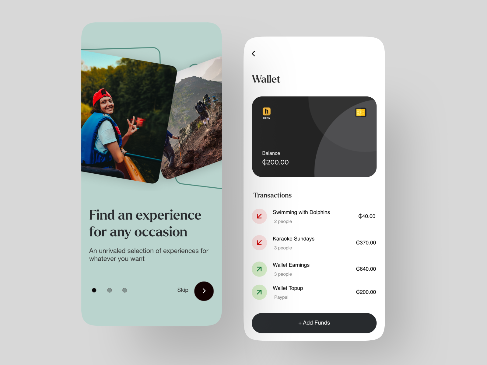
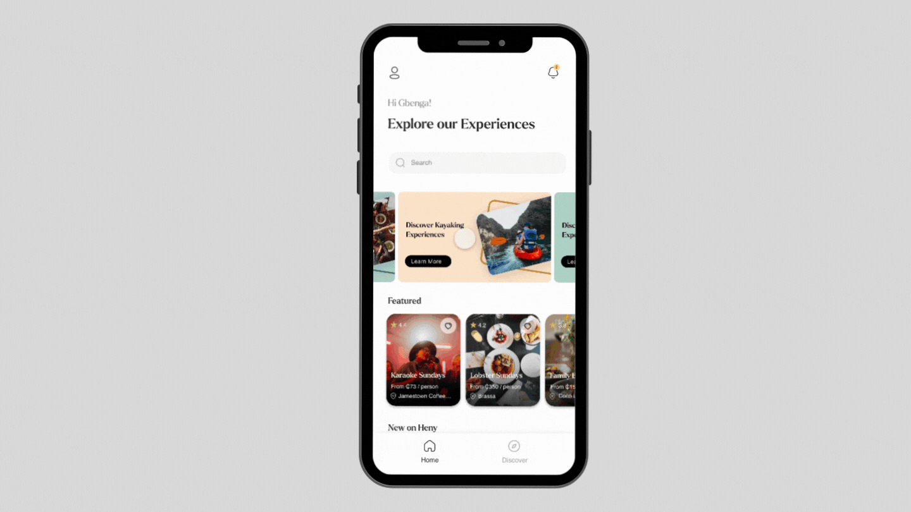

My Role
Work through design problems from beginning to end, translating insights from research and analytics into concepts that form features, detailed workflows and interactions.
Develop visual design language and design system for iOS and Android.
Prototype ideas to quickly gather feedback, evaluate viability, and work closely with engineers as you build, iterate on, and ship them.
Lead product design vision as a hands-on designer and providing guidance for design team output, facilitating cross-functional partnerships and implementing effective design processes.
Craft the high fidelity pages, components, interactions, and transitions.
Work closely with engineers, customer service, user researchers and product managers to define both the long-term strategy and the short term tactics for our products.
Collaborate with other Product Designers to raise the bar on design quality, maintain design consistency and coherence across features and continuously improve design processes, principles, and tooling.
Hire, mentor, align, and amplify the product team from strategy through delivery
Participate in structured design critiques and openly share work and ideas.
Spearhead usability testing post product launch

Research
11 one-on-one interviews, 348 answered questionnaires and 2 focus groups
Investigate forums, WhatsApp groups and did sentiment analysis
Mapped out SWOT Analysis
IBM Design Thinking. toolkit
Creating user personas, created user and storyboards
Created empathy maps, as-is scenario and journey maps


Design Systems

Userflows
Using this we were able to identify the flow off information throughout the lifecycle of the app and in different stages

Low-Fidelity Prototype
We converted user flows into Low-Fidelity prototypes. in order to indentify the information architecture. This was done on unison with the

Visual Design
Onboarding and Authentication




Usability Test
Afinity map
I created an affinity map based on the usability test to evaluate the users thoughts and behaviors. I organized my insights based on positive comments and suggestions which will help me determine potential solutions and next steps

I tested using [maze.co](http://maze.co) to gather user feedback and discover pain points in the current design. I had 20 participants go through the mobile high-fidelity prototype to determine the usability of navigation, flow, information architecture, and design. I also observed and analyzed the user's interactions through remote video call, video recording, and note taking. With the help of the marketing manager, Lawrence, we recruited participants for the curator and user flow. Overall, we received good feedback from the participants. Based on the research we identified the following usability issues:
-Users could hardly read the booking info because the QR code was taking most of the screen real estate
-Add success on payment